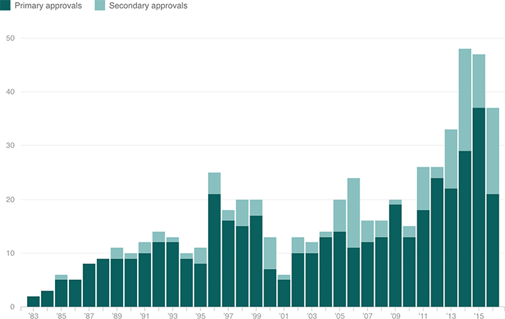

Orphan Approvals By Year
First-time orphan approvals have more than doubled over the past decade, with a record 37 of them in 2015. These approvals include new molecular entities, other new drugs and repurposed drugs approved as orphans for the first time. But companies continue to get secondary orphan approvals to treat additional diseases — or sometimes just slices of those diseases. In fact, in 2006, there were more second-time orphan approvals than first-time orphan approvals.
